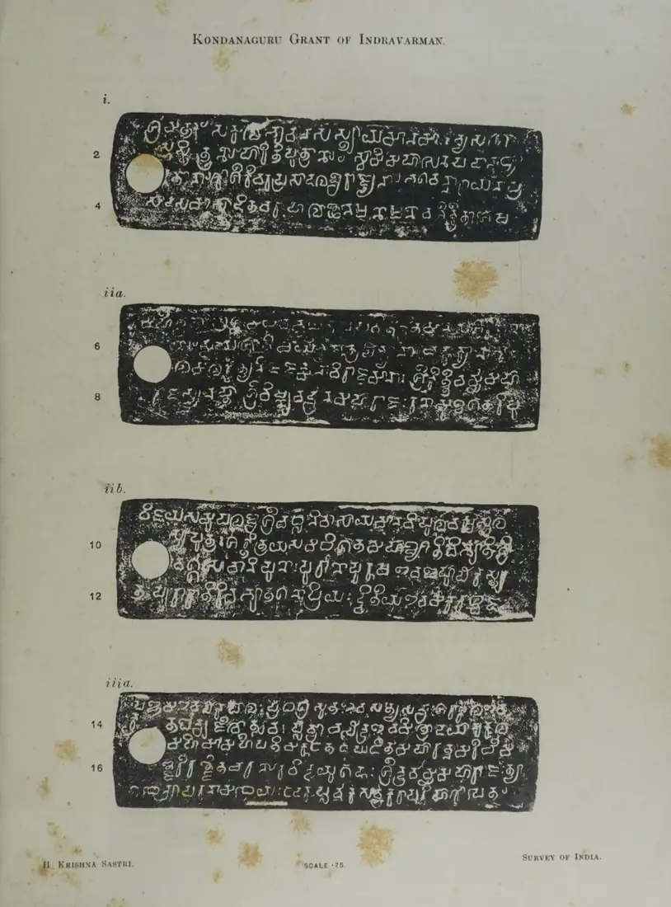
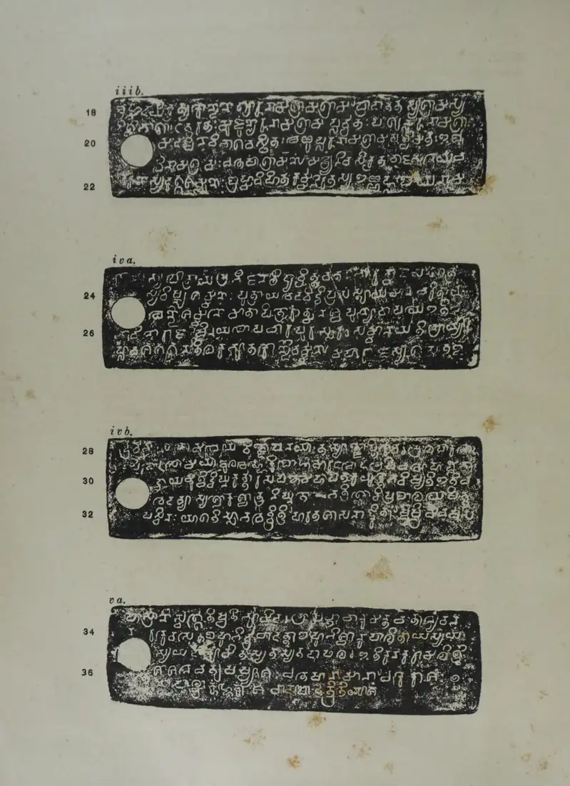

No. 1.—KONDANAGURU GRANT OF INDRAVARMAN.
BY PROFESSOR E. HULTZSCH, PH.D.; HALLE (SAALE).
Ink impressions of this inscription were sent to me by Rao Bahadur H. Krishna Sastri, along with the following description of the original plates :
“This set of five copper-plates was received from Pendyala Subrahmanya Sastri, National College, Masulipatam, through the President, District Board, Godavari, in June 1921. The plates are held together by a circular ring rivetted into the back of a circular seal, on the countersunk surface of which are cut, in relief, a crescent, the word śrī-Tyāgadhēnu, and an expanding lotus-flower of six petals. The plates bear writing on eight faces in all, the first and last plates having writing only on their inner sides, and have no raised rims. They measure about 7” in breadth, and a little less than 2” in height. The ring-hole is bored at a distance of about from the left margin of the plates and measures about in diameter. The ring has a diameter of about 4”, and the seal is a little more than 2” in diameter. The plates, with the ring and seal, weigh 100 tolas. The ring was cut in this office.”1
The writing on the plates is on the whole in a state of very good preservation. The alphabet resembles that of other early Eastern Chalukya inscriptions. The secondary forms of i and ī are not always clearly distinguished. The Jihvāmūliya occurs in yah= kaśchid= (l. 30). A final form of m is frequently used; one of t is found in prādāt (l. 18) and vasēt (l. 34), one of n in rāja[r*]shīn (l. 26), and one of l in -Bōl (four times in l. 28 f., and once in l. 37).
The language of the inscription is Sanskrit prose; but three verses of Vēda-Vyāsa are quoted in lines 31-35. The Telugu plural -Bōl occurs, four times in line 28 f., and once in line 37. Lingual l is used also in Chalukyānām (l. 6), -yugalaḥ (l. 16), and in the Telugu village-name Vellekki (l. 29). The Telugu r occurs in the two village-names Cherupūru (l. 20) and Iṛralū[r] (l. 22). The vowel rī after consonants is generally expressed by the syllable ri. After r, consonants (except sibilants) are doubled, and dh is doubled before y in maddhyē (l. 21). In -vaksha-sthalasya (l. 9 f.) s is elided before sth. In line 28 the group ñj is employed instead of jñ in viñjāpanayā and āñjāpti (for ājñapti). In line 21 the adjective niv[ā*]sin seems to be used in the sense of ‘lying, situated.’
The inscription records the grant of the village of Kondanagūru to the Brāhmana Chenđiśarman by the Mahārāja Indravarman, surnamed śrī-Tyāgadhēnu,2 i.e. ‘the (celestial) cow in liberality,’ who was a son of the Mahārāja Vishṇuvardhana and a grandson of the Mahārāja Kirtivarman, and who belonged to the family of the Chalukyas. The donor’s father, Vishṇuvardhana, has to be identified with Vishṇuvardhana I, the founder of the
1 [The inscription has been reviewed in the Epigraphical Report for 1922; App. A, No. 2, and p. 96.—Ed.]
2 The same surname forms the legend on the seal of this grant which is reproduced on the back of Plate of the Niṇuparu grant of Jayasimha I, infra.
Eastern Chalukya dynasty, who is known to have been the younger son of the Western Chalukya king Kīrtivarman I. Consequently, Indravarman must be the actual name of the younger son of Vishṇuvardhana I, who is called Indra-Bhattāraka or Indrarāja in the inscriptions of his successors, and who, according to later trādition, reigned only for seven days.1
The grant seems to have been made at the request of a chief named Koṇdivarman, and the executor of the grant seems to have been Indravarman's eldest son, who likewise bore the name Indravarman. From other inscriptions we know only of a single son of Indra-Bhattāraka or Indrarāja, who succeeded to the throne as Vishṇuvardhana II.
Line 28 f. contains four signatures of witnesses of the grant, each of which consists of the name of some village, followed by the word Bōl. In the opinion of Rao Bahadur Krishna Sastri, Bōl (for Bōyalu) is the Telugu plural of Bōya. In the Chendalūr plates of A.D. 673, Bōya occurs five times, and is once replaced by the Sanskrit word vāstavya, 'a resident, inhabitant.'2 The same must be the meaning of the word Bōya in a grant of Vishṇuvardhana II, where a large number of donees are mentioned by name and are stated to have been Bōyas, i.e. 'residents,' of certain villages.3 In the Chendalūr plates of A.D. 673 the actual names of the donees are omitted, and the expression 'resident of such and such a village' is employed in the place of the donee's proper name. Similarly, the donee's grandfather, Durgaśarman, receives in the subjoined grant the epithet 'Iṛralū[r]-Bōya by name' (l. 22). It might be concluded from this that Bōya is the designation of a village-clerk (Karṇam). But this possibility is excluded by the fact that in the above-mentioned grant of Vishṇuvardhana II two different individuals, Venṇisarman and Chāmundīsarman, are stated to have been Māraṭa-Bōya, i.e. 'a resident of Mārata.'4 In a grant of Bhīma I the donee (or his grandfather) is styled Ummarakaṇthi-Bōl,5 i.e. 'a resident of Ummarakanṭhi.' This use of the plural Bōl suggests that the term Bōl in Ālapāka-Bōl, etc. (l. 28 f.), and in Chōḍa-Bōl (l. 37) will have to be explained as the honorific plural of Bōya, 'a resident, inhabitant.'
Lines 19-21 contain the names of four villages which formed the boundaries of the village granted, Konḍanagūru. The boundary in the South was Cherupūru (l. 20). This village is perhaps identical with Cherupūra in the Plāki6 district, which, according to Dr. Fleet,7 was probably an older form of Chipurupalle in the present Vizagapatam District. The remaining village-names I am unable to identify.
TEXT.8
First Plate; Second Side.
- 1 Svasti9[||*] Śrīmatām(tām) sakala-bhuvana-samstūyamāna-Mā[na]vya-sagō-
- 2 tr[ā*]nām(nām) Hāriti-putrānām(nām) svāmi-Mahāsēna-p[ā*]d-ānudhyā-
- 3 tānām(nām) Kauśiki-vara-prasāda-labdha-rājy[ā*]nām bhagavan-Nārāyaṇa-pra-
- 4 sāda-samāsādita-varāha-lāṇchhan-ekshaṇa-kshaṇa-vaśikri(kṛi)t-āsēsha-
1 See above, Vol. VIII, A. peudix, p. 16 and note 9.
2 See my remarks; above, Vol. VIII, p. 238.
5 Ind. Ant., Vol. VII, p. 187 f.
4 Ind. Ant., Vol. VII, p. 188, text lines 41 and 50.
5 Above, Vol. V, p. 129, text line 25 f.
6 This is the actual reading of the Chipurupalle plates of Vishṇuvardhana I; see above, Vol. IX, p. 318, and cf. Vol. XII, p. 138.
7 Ind. Ant., Vol. XX, pp. 15, 96.
8 From ink impressions supplied by Rao Bahadur H. Krishna Sastri.
9 This word is entered by the wri'er on the left side of line 2.
Plate 1 is bound after this page.
Plate 2 is bound after this page.
Second Plate ; First Side.
5 mahibhritām[=*]asvamēdh-āvabhritha-snāna-pavitrikri(kṛi)tā-mānasa-[śarīrā]-
6 nām(nām) sva-yaśō-vishayikri(kṛi)ta-trailōkyānām(nām) Chaṛukyānām(nām) ku-
7 lam=ala[m] kri(kṛi)tya nīja-janmanah(nā?) viīājamānāh(naḥ?) śrī-Ki[r*]ttivarmma-
mahā-
8 rājasya naptā śrī-Vishṇuvarddhana-mahārājah1 rana-mukha-ga(śa)tā-ripu-
Second Plate ; Second Side.
9 vijaya-samupalabdha-Śrī-vadhū-nivāsāyamāna-vipula-vaksha-sthala-
10 sya putraḥ śakti-traya-samadhigata-mahā-khyāti-vibhūti[ḥ] tri-2
11 vargga-sēvā-nipuṇaḥ Purāṇapurusha iva bahu-lōka-stu-
12 taḥ Purārātir=iva bhūta-gaṇa-priyaḥ dvitiya iva Makaradhvajaḥ
Third Plate ; First Side.
13 pañchama iva lōkapālaḥ Pridhagrasuta3 iva satya-sandhaḥ śarā(ra)t-kāla iva
14 kṛita-bandhujiv-ōtsavaḥ pūrvv-āchalēndra4 iva mitr-ōday-ānukūla-
15 mahimā mahipati-makuṭa-taṭa-ghatita-mahāratna-marīchi-ma-
16 ñjarī-rañjita-charaṇ-āravinda-yugalaḥ śr-Indrava[r*]mma-mahārājaḥ Tyā-
17 gadhēny-āpara-nāmadhēyaḥ5 udaka-pūrvvakam sarvva-karā(ra)-parihār-ōpētam
Third Plate ; Second Side.
18 brahmad[ā*]yikritya Konḍanagūru-nāma-grāma-grāmam prādāt [*] Tasya grāmasya
19 dig-vibhāgā[ḥ*] | Uttarataḥ Mujumṇūru-nāma-grāma[ḥ] [*] Pūrvvataḥ Pagunūru-
nāma-grā-
20 maḥ [[*]] Dakshiṇa-vibhāg-[ā*]vasthitaḥ Cheṛupūru-nāma-grāmā[ḥ] [*] Paśchimataḥ
Irbba-
21 [l]Ji-nāma-gr[ā*]maḥ [[*]] Ětēshām grām[ā]nām maddhyeṅ6 niv[ā*]śi kṛitaḥ[[*]]
Vājasanēya-cha-
22 raṇasya Du[r*]ggaśa[r*]mmanah(nō) Brahma-vihita-karmma-niratasya Iṛralū[r]-
Bōya-nāma-
Fourth Plate ; First Side.
23 [brāhmaṇa]sya pautrāya7 abhijana-vidyā-vri(vri)ttavataḥ(tō) Bhāradvāja-sagōtra-
24 sya Vishṇuśarmmaṇaḥ putrāya vēdavid-vipra-saṁstūyamāna-charitāya
25 Chenḍiśarmmaṇe mātāpitrōr=ātmanaś=cha puṇyō(ny-ā)vāptayē(ya) iti cha [[*]]
26 Bhāvinō rāja[r*]shin yathōpachāra-purassaram(ram) sammānayati [[*]] Āryyā-
27 hū-va[m]śa-gagana-tilaka-bhūta-Ko[ndi]vārmmaṇā mahārājasy=āgra-suta I-
Fourth Plate; Second Side.
28 ndravarmmaṇa namadhēya1 viñjāpanayā tasy=āñjāptirōvam2 Ālapāka-Bō!
29 . . ppi-Bō[!] Sōmayājula-Vellekki-Bō! Māraṭa-Bō! [*] Api cha mōhāl=lōbhā-
30 d=vā yah=kaśchid=vighna-karttāra3 sa pañcha-mahāpātaka-yuktō bhavishyati
iti4 cha [*]
31 Vēda-Vyā[sa*]sya ślōk[ā*]ś=ch=ātra [*] Nighnatō bha[r*]tri(tri)-gō-vipra-bāla-
yōshit-ta-
32 pasvinaḥ [*] yā gatis=sā bhavēt=vrittim5 harata[h*] śāsan-āñkitām [|| 1 ||*]
Shashṭhiṇma6 varsha-sa-
Fifth Plate; First Side.
33 hā(ha)srāṇi svarggē tishṭhatī bhūmi-da[h*] | ākshēptā ch=ānumant[ā*] cha
tāny=ēva na-
34 rakē vasēt [|| 2 ||*] Bahubhir=vva[su*]dhā dattā bahubhiś=ch=ānupālitā [*]
yasya-ya-
35 sya yadā bhūmi[s=*]tasya-tasya tadā phālam[|| 3 ||*] Iti Kanakarāma-likhi-
36 tē śā śa (ra) nē chatushashṭhyāśaḥ7 [*] Ētēshā nāmānām ēkaik-āśaḥ8
37 . . [pālvā]k am!=ēk-āṇśa[ ṇ] [*] Chōda-Bō!9 tri(tri)tīy-ā[m*]śaṇ [*]
ABSTRACT OF CONTENTS.
The Mahārāja Indravarman, whose other name was Tyāgadhēnu (l. 16 f.), adorned the family of the Chalukyas (l. 6 f.); was a grandson of the Mahārāja Kūrtivarman (l. 7 f.); and was a son of the Mahārāja Vishṇuvardhana10 (ll. 8-10). He granted the village11 of Koṇḍaṇa-gūru (l. 18) to Chendīśarman (l. 25), son of Vishṇuśarman of the Bhāradvāja gōtra (l. 23 f.) and grandson of Durgaśarman, (also) called Irṇalū[r]-Bōya, of the Vājasanēya charaṇa (ll. 21-23). The boundaries of the village granted were: in the North, Mujumṇūru; in the East, Pagunūru; in the South, Cheṛupūru; and in the West, Irbba[!]i (ll. 18-21).
The grant seems to have been made at the instance of a chief named Koṇḍivarman, who belonged to the family of Āryyāhū(?), and at whose request the Mahārāja's (viz. Indravarman's) eldest son, who, (like his father), bore the name Indravarman, was appointed executor (ājñapti) of this (grant).12 Line 28 f. seems to contain the names of four witnesses of the grant, preceded by the particle ēvam, 'thus,' viz. Ālapāka-Bō!,13 . . ppi-Bō!, Sōmayājula-Vellekki-Bō!, and Māraṭa-Bō!.14
1 Read perhaps Indravarmma-nāmadhēyō.
2 Read vijñāpanayā tasy=ājñaptiḥ ! Ēram=.
3 Read karttā.
4 Read bhavishyat=iti.
5 Read bhavēd=vrittiṇ.
6 Read Shashṭiṇ.
7 Read chatuhshashty-aṇśaḥ.
8 Read perhaps Ētēshāṇ brāhmanānām=ēkaik-āṇśaḥ.
9 A point or dash is engraved between bō and !.
10 The genitive -vaksha-sthalasya in line 9 f. proves that the nominative -mahārājaḥ in line 8 must be a mistake of the clerk who drafted the grant, for -mahārājasya.
11 The text reads grāma-grāma, 'village of villages,' i.e. 'a large village' (?) or 'a chief village' (?). The same expression occurs in another Eastern Chalukya grant; see Ind. Ant., Vol. XIII, p. 133, text line 18.
12 The purpose of the passage from which I derive these statements (ll. 26-28) is uncertain. If my correction Indravarmma-nāmadhēyō is accepted, it would still be necessary either to supply after Koṇḍivarmmaṇā the word kritayā qualifying the instrumental vijñāpanayā, or to read Koṇḍivarmmaṇō.
13 Bō! is the honorific plural of Bōya, 'a resident, inhabitant'; see my remarks on p. 2 above.
14 The epithet Māraṭa-Bōya is applied to two of the donees in a grant of Vishṇuvardhana I1; see Ind. Ant., Vol. VII, p. 188, text lines 41 and 50. In l. 60 of that grant, saṇprāṭta must be corrected into saṇprattaḥ.
(This) edict (sāsana) was written by Kanakarāma (l. 35 f.). The village granted was divided into 64 shares, of which each of the donees1 received one share (l. 36). The last line (37) contains the names of two further recipients of shares, of whom the first, whose name is doubtful, received one share, and the other, named Chōđa-Bōl, one-third share.

